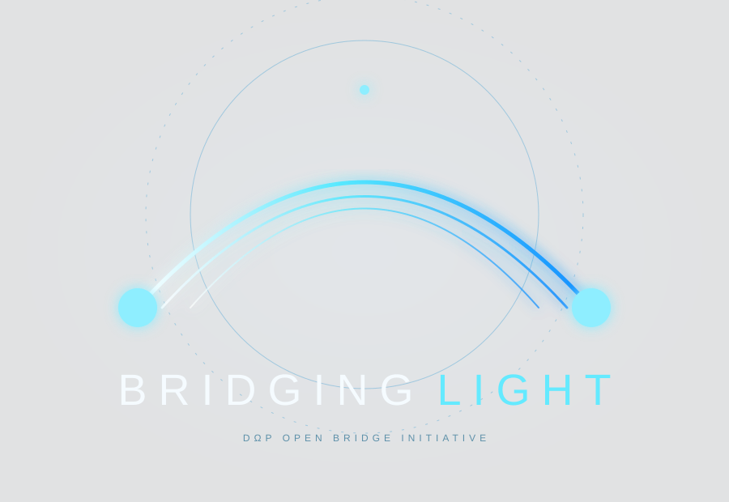

Structured Light
Optical forces, trapping, photonic matter and engineered light fields.

An open research programme exploring whether light, matter, fluids and physical fields can create structures that are programmable, reversible, resilient and capable of reconstitution.
Bridging Light investigates a simple but radical question: can interacting physical fields give matter temporary structural behaviours that conventional materials cannot?
Optical forces, trapping, photonic matter and engineered light fields.
Maxwell stresses, dielectric polarisation and electromagnetic stabilisation.
Electrohydrodynamics, surface tension and self-reconstituting liquid structures.
Field-responsive, reversible and dynamically stabilised material systems.
Sensing and adaptive control for maintaining structures in changing conditions.
Testing where quantum phenomena are genuinely relevant, without forcing the label.
Define a falsifiable claim and the problem it addresses.
Model expected behaviour, failure modes and measurable signatures.
Run controlled small-scale experiments with multi-angle recording.
Repeat, vary parameters and actively search for alternative explanations.
Advance only when evidence supports the next level of complexity.
Water bridge · optical forces · magnetic & acoustic fields · materials survey
Combine promising field effects and quantify stability, load and recovery.
Small, reproducible field-defined structure with useful measurable behaviour.
Only pursued if preceding evidence demonstrates a physically credible pathway.
Bridging Light is being developed as an open research initiative. Methods, observations, failures and evidence are intended to become part of a reproducible public knowledge commons.
“Human-Value-Centric is who we are and what we do.”
De-Omega-Point · Adelaide, South Australia
Who is the initiative looking to collaborate with? Physicists, materials researchers, engineers, experimental laboratories and creatives who can help us test ideas, build reproducible experiments and make the science understandable. Independent contributors, universities and curious minds are welcome.
Quantum physics, quantum optics, photonics, electromagnetism, acoustics and fluid physics. Help identify relevant mechanisms, model limits and define falsifiable predictions. Quantum pathways need a specific, testable role.
Materials science, soft matter, condensed-matter physics, nanomaterials and metamaterials. Investigate field-responsive fluids and reversible structures; measure stability, recovery and material limitations.
Mechanical, electrical, optical and systems engineers; robotics, sensing and feedback specialists. Design safe apparatus, instrumentation and adaptive control, and quantify energy, load and failure modes.
Experimental laboratories, universities and metrology specialists. Help review protocols, assess hazards, calibrate measurements and independently replicate results, including null results and failures.
Designers, illustrators, animators, filmmakers, photographers, musicians and sound artists. Document experiments and create clear visual explanations, films and immersive experiences. Label conceptual imagery so it cannot be mistaken for experimental footage.
Science communicators, educators, writers, software developers and data-visualisation specialists. Translate findings, uncertainty and limitations into accessible stories, reproducible tools and open documentation.
Tell us your discipline, the question you want to explore and what you can contribute: a protocol review, model, laboratory capability, experiment documentation or creative explanation. Include relevant work and your availability.
Opportunities are an invitation to discuss a contribution, not a claim of confirmed partnerships.